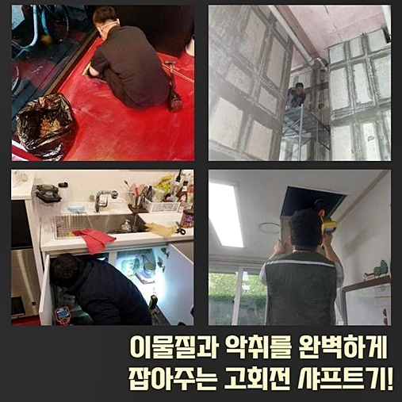
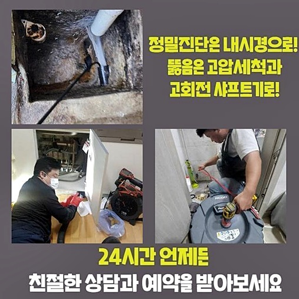
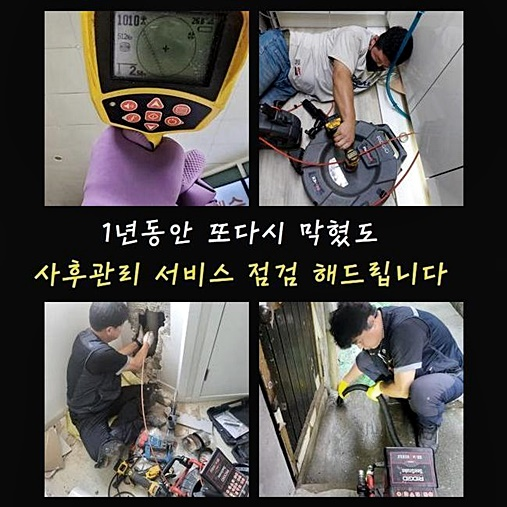
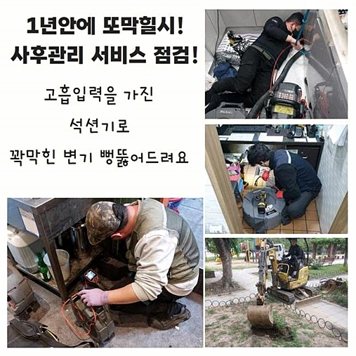
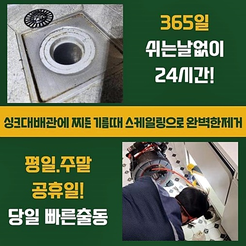
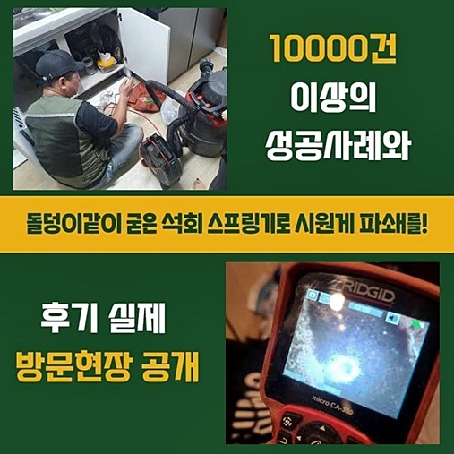

🏠 중구 청구동세탁기배수구막힘 삼각동 고압세척비용 설비공사
용인 하수구막힘 전문 시공 후기

📋 작업 개요
- 위치: 용인
- 서비스 유형: 하수구막힘, 배관막힘, 뚫는업체, 고압세척, 설비공사
- 작업 일시: 2024. 8. 16. 9:51
- 업체명: 하수구수사대 (010-5615-2118)
🔍 문제 상황
하수라인이 꽉 막혔다면 배수관로 내시경기기를 사용하여 진단해보고 꽉 막혀버린 모습을 파악해보고 통수시키는 과정이 진행됩니다
문제 지역의 내부라인 외에 밖으로 돌출된 배수관로가 꽉 막힌 상태라면 조속하게 수리과정이 진행됩니다
중구 청구동세탁기배수구막힘 삼각동 고압세척비용 설비공사
겉으로 돌출된 배수관들은 관만 봐도 단단한 모양이고 전체라인이 길게 자리잡기에 현장을 파악하는것부터 통수시키는 샤프트기계 작업까지 결코 쉽지않은 작업입니다
앞의 문제처럼 건물 바깥쪽에 위치한 문제들로 보여진다면 자세한 진단과 고강도 수리과정이 필요하게되므로 확실한 전문진을 찾아서 작업들을 문의하시기 바랍니다
이번 문제내용은 주차장안에 위치한 메인 배관들이 순환하지 못하는 문제였습니다
우선 주된 배관시스템이 연결되어 있는 외벽의 하수관에 대한 점검작업들을 시행했습니다
관리업체 말에 따르자면 외벽에 있는 배관라인에서 주된 배관으로 오는데까지 종합적으로 막힌정도가 고약하다고 이야기 해주셨습니다

🔎 원인 분석
💡 전문가 진단: 정밀 진단 장비를 사용하여 슬러지의 고착 여부를 판명하고 타격/세척 작업을 실시했습니다.
오염원의 성분을 진단합니다
이후로는 주차장의 천장에 있는 메인배관 확인을 이행해야 하는데 천장에 위치해 작업이 가능한 반경들이 확보불가능 상태라 단단한사다리 설치후 착수했습니다
작업자가 부담없게끔 일 할수있는 환경들이 체크되어야 진행도 원활합니다
우선 높은곳에 있는 횡주관들은 복잡했는데 막힌원인을 찿아내고, 파악한 위치로 안쪽을 비추는장비를 활용해서 배관들 안쪽의 막힌 사안을 이해하고 불순물의 특징을 진단했습니다
이러한 작업에서 배관들 내부쪽으로 내부를 비추는 라인을 넣는 일을 위해 횡주배관에 뚫는 작업이 필요했어요
전동드릴같은 기계를 이용해 기기선이 들어가는 최소면적으로 뚫고나서 해당부위로 기기를 넣어 모든 라인의 스케일링과 파악을 실시하기로 했어요
작업들이 종료된후 뚫려있는 작은구멍에 관련하여 전문적인 되메우는 기술로 추후 발생할 수 있는 다른 오류에 큰걱정 하지않으셔도 돼요
작업을 통해 하수로 안에 쌓인 불순물의 상태를 규명해보았습니다
예상과같이 중요 하수관의 상당히 많은 부위들에 오염원들이 쌓인 상황이었고 건물외부 하수시스템으로 내려오는 장소까지 관 내부에 붙은 상당한 양의 찌꺼기가 만들어진 상태였습니다

🔧 작업 과정
배관벽에 불순물이 쌓여가며 층을이룬 하수배관 침전물은 그위로 자꾸 오염물이 새롭게 쌓이며 두껍게 만들어지고 물들이 내려가는 물길이 서서히 조여지며 막히는 일이 일어납니다
스케일링이 가능한 장비로 오랫동안 형성된 찌꺼기를 갈아냄으로써 깨끗하게 뚫어냅니다
내부의 상황을 자세히 보니 주된 배관시스템이 붙은 관통의 가생이 주변에 심각하게 형성된 침전물을 찾아냈습니다
특히 많은 양의 물이 내려가는 메인라인과 건물밖의 하수라인 내벽에는 쉽게 불순물이 형성되고 돌같이 굳어버린 침전물들은 자연파쇄가 어렵고 크게 형성 되기때문에 정상적인 배수현상을 어렵게 만듭니다
이러한 진행과정으로 하수구에 대한 샤프트기기를 이용한 작업과정으로 완전하게 없애야 이후에 막히는 케이스를 방지합니다
작은구멍을 냈던 메인배관 부위로 내부를 비추는 선을 집어넣어 막힌 정도를 확인하고 플랙스샤프트 기기등을 시작하려는데 이번 현장처럼 넓은 배관은 흔하게 사용되는 하수관장비로 문제를 해결이 난해합니다
원인을 설명드려보면 전방위적으로 오염원제거 작업이 착수되는데 샤프트기기나 흡입하는 장치는 부분적으로 조심스러운 오염원 제거가 가능하므로 너비가 상당한 메인배수관에 작업들을 진행시키면 불필요한 에너지가 요구되게됩니다
이럴때는 높은압력으로 세척이 가능한 기계를 활용해서 꽉 막힌 배관을 뚫어내겠습니다
모든배관라인을 확인하며 분사구 조준선을 지정하고 고압으로 발사시키며 이물질이 붙어있는 내벽과 하수로 안에 쌓인를 세척하는 작업들이 올바른 해결책이라고 할수있습니다
고압으로 세척하는 작업들이 적극적으로 시행됨에 따라 노즐위치를 다양한 각도로 발사하고 기기의 강한 힘으로 배관 내벽의 침전물을 파괴합니다
굳어져있는 현상도 매우 안좋은 현장이고 메인 배관의 특성상 노폐물의 양도 많았기에 시간이 흐를수록 하수배관이 막히는 현상이 점점 잦아질 것으로 예상합니다
또다시 동일한 불편이 일어나지않도록 세밀하게 작업을 하고 잔여 오염원이 없도록 구석구석 기기의 강한 힘으로 세척을 마무리합니다
이와같이 모든 작업이 마무리 되면 구멍을 내어놓은 메인역할을 하는 하수로의 일부지점을 처음처럼 막는 과정을 착수시키고 오늘 스케쥴을 완료하게 되었습니다
추후에 배수관 문제로 불편하시지 않토록 꼼꼼하게 구멍을 낸 부분을 다시 메꿨고 이후로 오수가 흘러가는 데 있어서 불편함은 일어나지 않도록 작업을 완료했어요


✅ 작업 완료
그후로는 주변의 하수라인에 비정상적인 작동이 일어나는지 막힘없이 잘 흐르는지 살펴보았고 본관에서 외벽의 하수시스템까지 진행하는데 이어 순탄하게 하수가 내려가는지 전부 확인하였습니다
하수구 막힘현상이 생활에서 발생되는 물질로 문제가 야기된다면 건물의 안쪽 배관들부터 건물밖의 하수라인까지 배수가 전체 모두 가능할수 없기에 빠른 시간내에 시공의뢰를 하시는게 바람직합니다
배관의 비정상적인 오류는 염산등으로 급히 처리하지 마시고 전체적인 탐색을 해보고 알맞은 기계를 써서 진단결과를 파악한 후에 이물질제거 작업들을 시작하는게 안전하지요
전문적인 케어를 원하신다면 편안한 마음으로 의뢰를 맡겨주세요



⚠️ 하수구 배관 막힘 예방 및 관리 가이드
- ✅ 머리카락, 비닐, 물티슈 등 물에 분해되지 않는 이물질은 하수구 유입을 절대 금지해 주세요.
- ✅ 하수구 거름망을 씌우고 모여진 이물질은 주기적으로 쓰레기통에 바로 비워주셔야 합니다.
- ✅ 배관 노후가 심할 경우 이물질이 더 쉽게 걸리므로 주기적인 배관 세척(고압세척 등)을 권장합니다.
- ✅ 작업 후 1년 이내 재발 시 하수구수사대에서 무상 A/S 보증 서비스를 제공합니다.
💡 핵심 정리
- 확실한 장비 작업(내시경 점검 및 샤프트 스케일링)으로 원인을 뿌리 뽑습니다.
- 작업 후 1년 이내에 동일한 부위 재발 시 100% 무상 A/S 서비스를 보장합니다.
- 서울 · 경기 · 인천 전 지역에 24시간 언제든 긴급 출동할 수 있도록 항시 대기 중입니다.
❓ 자주 묻는 질문 (FAQ)
🚨 용인 하수구막힘 문제로 고민이신가요?
정확한 원인 진단과 확실한 시공으로 재발 없는 해결을 약속드립니다.
24시간 긴급 출동 | 서울 · 경기 · 인천 전지역 | 1년 내 재발 시 무상 A/S